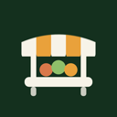

Farmers Market
Show who's selling at your market this week
- Every stall on one page, with search and chips
- "Here this Saturday" shows today's traders
- Market open / cancelled banner (Premium)
- Vendor applications land in Contacts (Premium)
What it does
Farmers Market: Vendor List puts your stallholders on your site as cards: a logo, the name, a category chip, a line about what they sell, a stall number and a link to their website or Instagram.
Shoppers can search by name, or tap a chip to see just the bakers or just the crafts. A "Here this Saturday" filter shows only the people trading today.
Vendors live in a dashboard page of your own site. Add them one at a time with a media library logo, or paste a whole season in from a spreadsheet.
The paid plan adds dated market days with a checkbox per vendor, a banner above the list ("Market open today 9-1 · 34 vendors" or "Cancelled: storm"), stall numbers, a stall map image with a link to the full map, and a vendor application form. Each applicant is saved and filed in your Contacts under the label "Vendor applicant", so an automation can send your stall pack. Approve one and it is copied into your vendor list.
The free plan lists up to 20 vendors with search, chips and the this-Saturday filter, plus a small credit link. Paid sites remove the credit and lift the cap.
A new install starts with example vendors, so the page looks right at once. Delete them as you add your own.
Price
Free
- Up to 20 vendors in a grid or a list
- Logo, name, category chip and short blurb
- Search, category chips and the "Here this Saturday" filter
- Website and Instagram links on each card
- Small credit link
Premium
$5/month, $4/month billed yearly (20% off)
- Unlimited vendors
- Dated market days with the vendors trading each day
- Status banner: "Market open today 9-1 · 34 vendors" or "Cancelled: storm"
- Stall map image with a link to the full map
- Stall numbers on the cards
- Vendor application form: each applicant is saved and added to Contacts with the label "Vendor applicant"
- Import a season from a spreadsheet (CSV)
- Remove the credit link